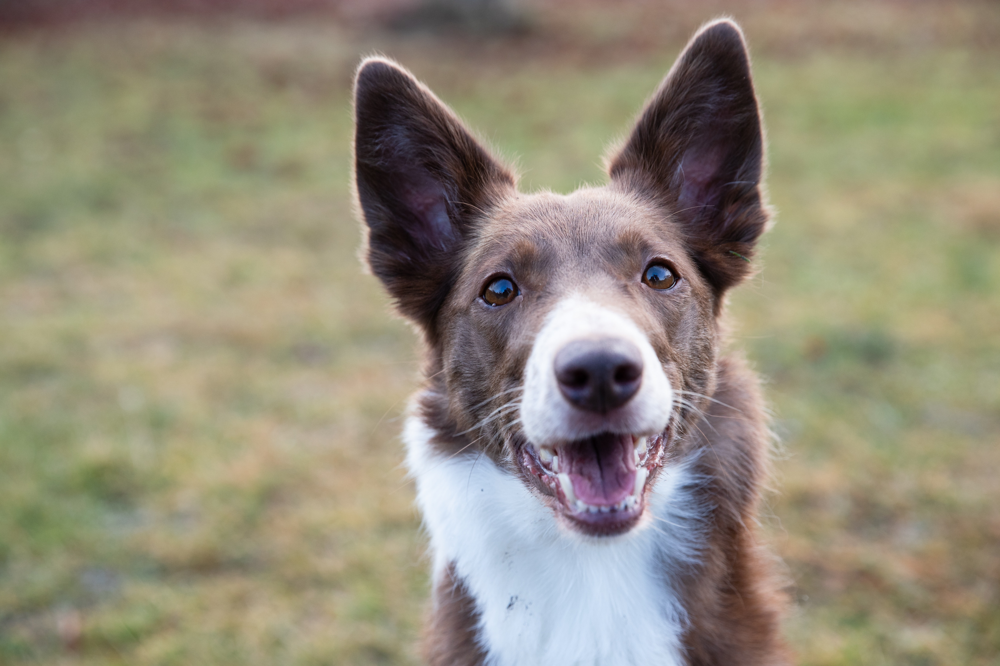
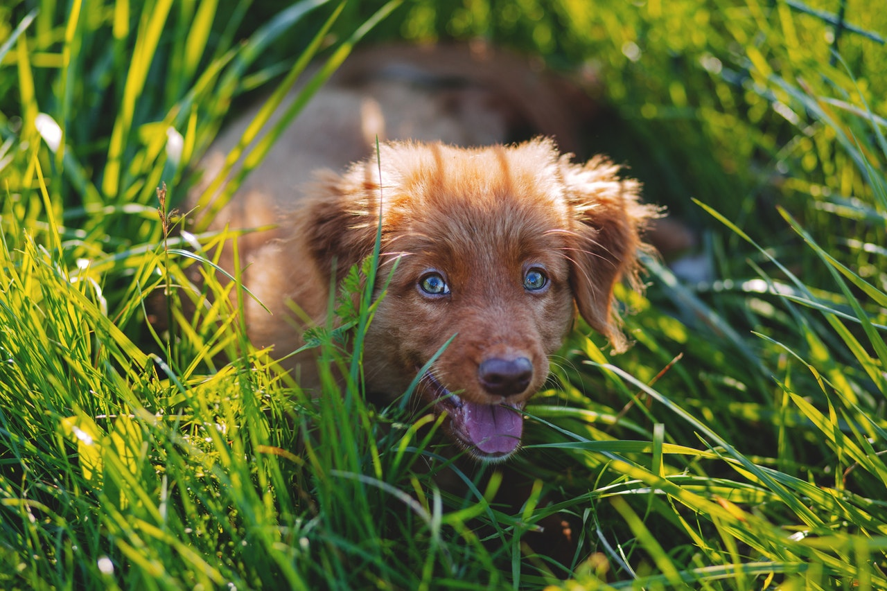

Your first month together.
-
Socialise with friendly, fully vaccinated dogs. Your puppy won't be fully vacinated yet but it's essential to start introducing your dog to others.
-
Carry your dog for a walk. Until your puppy is fully vaccinated, it's not safe for them to run freely. However they need to get used to sights and smells and this is the best way to do it.
-
Training, especially toilet training. The early lessons you teach your puppy are those that will stick the best. Everytime your puppy goes to the toilet where they are supposed to, celebrate them like they've given you a new car and they will learn very quickly
-
Start to leave them alone for short periods of time. Separation anxiety will be minimised if you start teaching them early on that whenever you do leave them, you return, and often with treats!
-
Introduce them to the car, the hairbrush and having their eyes and ears checked. It's better for them to be comfortable with these things before they are needed.
Next steps
-
As soon as your puppy is fully vaccinated, it's time to take them outside and start socialising them with dogs.
-
Continue with the training. It might seem repetitive to make your puppy sit and lay over and over again but it is building and strengthening the bond between you.
-
Consider training lessons. Even a one of lesson will give you ideas about how to continue with your training that you had not considered
-
Keep on top of your puppies diet. As she grows so will her needs.
-
Consider getting your dog neutered. If you have a bitch, then you will not be able to let her off the lead when she in on heat.
